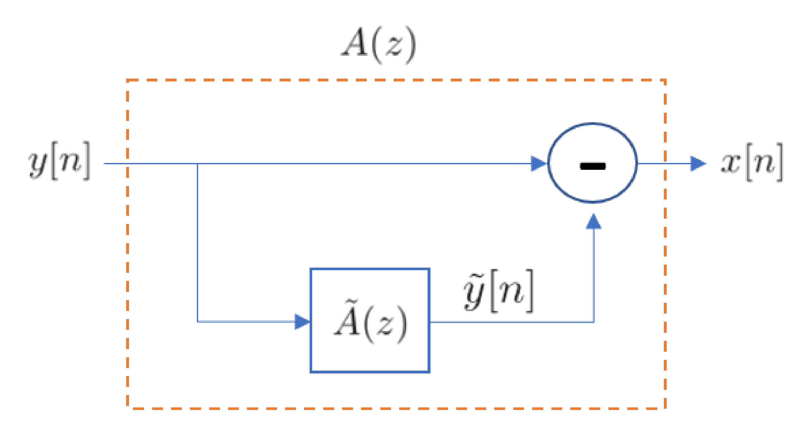
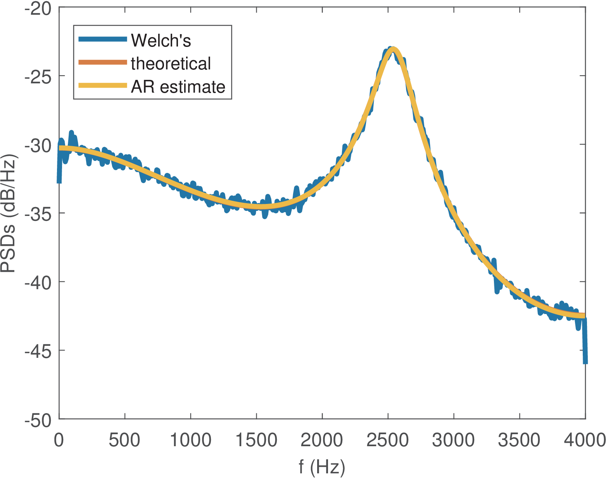
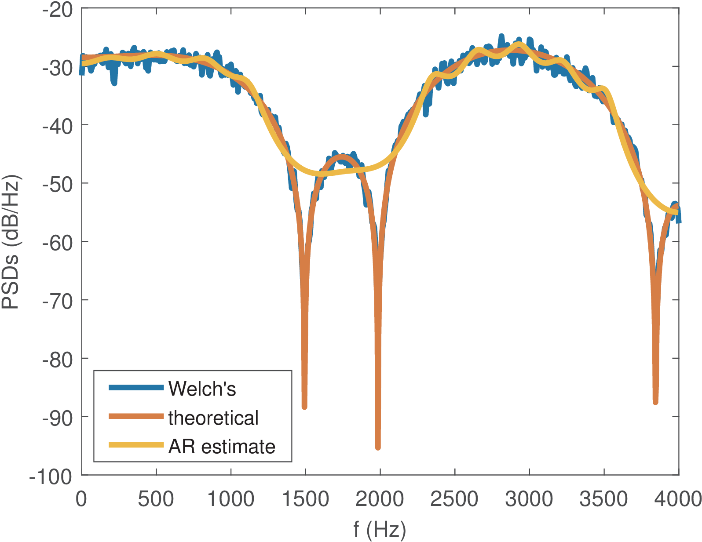

57 Parametric PSD Estimation via Autoregressive (AR) Modeling
4.8 Parametric PSD Estimation via Autoregressive (AR) Modeling
In Section 3.10.1, the terms AR and MA (autoregressive and moving-average, respectively) were associated to filters. Here they will also denote WSS random processes that have white noise as the input to a LTI filter that is AR or MA, respectively.
The periodogram and Welch’s methods are categorized as “classical” or “nonparametric” spectral analysis. This section discusses a method from “modern” spectral analysis, which consists in indirectly estimating a PSD by first estimating the parameters of the autoregressive model (or filter):
|
|
(4.53) |
which corresponds to Eq. (3.54), repeated here for the convenience of calling (instead of ) the system order.
Such “parametric” spectral estimator has the advantage that there are potentially fewer parameters to be estimated when compared to the values of a PSD. For example, when using an -point FFT for PSD estimation using Welch’s algorithm, values need to be estimated. In contrast, the AR model requires estimating only parameters and the gain . On the other hand, if the assumed model is incorrect, the parametric estimator may lead to highly inaccurate results.
The goal of AR-based PSD estimation is to find that, when excited
by white noise generates an output that has the same statistics of , i. e.,Hence, it is assumed that is a realization of an ergodic autoregressive random process of order , denoted as AR().
The problem is posed mathematically as finding the FIR filter that minimizes the energy of the output signal in
The filter is called the prediction-error filter because predicts an estimate of as
|
|
(4.54) |
based on the past samples of . This is depicted in Figure 4.16. The prediction error is and, when is an optimum solution, has characteristics of white noise with power . The signal is also called prediction error and, therefore, is called the prediction error power.

AR-based modeling using Eq. (4.54) is widely used in speech coding and, because in Eq. (4.54) is a linear combination of past inputs, it is called linear predictive coding (LPC).
The filter is often used to perform decorrelation of a signal ( according to the adopted notation), while is called the synthesis filter because it can generate a signal () with a given PSD from white noise ().
Example 4.24. Experimenting with Matlab’s aryule function. Two examples of autoregressive modeling using Matlab are provided here. Similar commands can be used with Octave, as later suggested in Listing 4.24.
The function aryule.m returns the filter A and the power Perror of the white noise signal , corresponding to and , respectively. When a white signal with power Perror is used as input of the synthesis filter , the resulting signal has the power of .
As an example, the result of the following code composes Table 4.2.
y=(1:100)+randn(1,100); %signal composed by ramp plus noise for P=1:4 %vary the LPC order [A,Perror]=lpc(y,P) %estimate filter of order P end
|
|
|
|
| Order | Filter | Perror () |
|
|
|
|
| 1 | [1.0, -0.9849] | 102.1144 |
|
|
|
|
| 2 | [1.0, -0.9883, 0.0035] | 102.1131 |
|
|
|
|
| 3 | [1.0, -0.9884, 0.0082, -0.0047] | 102.1109 |
|
|
|
|
| 4 | [1.0, -0.9884, 0.0082, -0.0138, 0.0092] | 102.1022 |
|
|
|
|
</div>
Table 4.2 illustrates that the LPC filter of order can extract most of the correlation among the samples of the input signal y. For , the coefficients for have relatively small values. Besides, Perror does not decrease significantly with . A second example illustrates a situation where outperforms . Listing 4.19 is similar to the previous one, but simulates an AR(2) process and allows to create Table 4.3.
N=1000; x=randn(1,N); %WGN with zero mean and unit variance Px=mean(abs(x).^2) %input signal power B=4; %filter numerator A=[1 0.5 0.98]; %filter denominator 5Fs=1; %sampling frequency Fs = BW = 1 DHz y=filter(B,A,x); %realization of an AR(2) process Py=mean(abs(y).^2) %output power for P=1:4 %vary the filter order [Sy,f]=pwelch(y,rectwin(N),[],N,Fs,'twosided'); 10 [Hthe,w]=freqz(B, A,'twosided'); [Ahat,Perror]=aryule(y,P) %estimate filter of order P [Hhat,w]=freqz(sqrt(Perror), Ahat,'twosided'); clf, plot(2*pi*f,10*log10(Sy),'r'); hold on plot(w,10*log10(Px*abs(Hthe).^2),'k--'); 15 plot(w,10*log10(Px*abs(Hhat).^2),'b'); legend('Welch','Theoretical','AR') pause end
|
|
|
|
| Order | Filter | Perror () |
|
|
|
|
| 1 | [1.0, 0.2566] | 513.6893 |
|
|
|
|
| 2 | [1.0, 0.5089, 0.9832] | 17.1227 |
|
|
|
|
| 3 | [1.0, 0.4601, 0.9579, -0.0496] | 17.0805 |
|
|
|
|
| 4 | [1.0, 0.4595, 0.9694, -0.0441, 0.0120] | 17.0781 |
|
|
|
|
</div>
As expected from the analysis of an AR(2) realization, Table 4.3 shows a drastic improvement when transitioning from to 2, but without significant decrease in Perror afterward. Note that the correct filter was , while the estimation for was . Increasing the number of samples to N=10000 leads to the accurate estimation .
4.8.1 Spectral factorization
Spectral factorization8 is an important tool for generating a signal with a given discrete-time PSD via a rational system function . Instead of using Fourier transforms, it is easier to work with the more general z transform . Assuming a valid PSD is real and obeys , if its corresponding is rational, it can be uniquely factored as
|
|
(4.55) |
where is the geometrical mean of , is monic and loosely minimum-phase.
To obtain , first can be obtained by substituting by in
, and then its complex-conjugate is obtained according to the strategy discussed in Section B.3. For instance, suppose , then and|
|
(4.56) |
To understand Eq. (4.55), it is also useful to note:
<ul class="itemize1">
<li class="itemize">
<!--l. 1795--><p class="noindent" >Definition of <span <li class="itemize">
<!--l. 1796--><p class="noindent" >Definition of the geometrical mean </p><table class="equation-star"><tr><td>
<!--l. 1797--><math display=“block” class=“equation”>
</li>
<li class="itemize">
<!--l. 1800--><p class="noindent" >A minimum-phase <!--l. 1800--><math display=“inline” >
|
|
(4.57) |
<!--l. 1805--><p class="noindent" >where <!--l. 1805--><math display=“inline” >
Now the intuition behind Eq. (4.55) can be developed as follows. Suppose one wants to generate a discrete-time signal with a given PSD , by filtering white noise with PSD and using from Eq. (4.37). Using the fact that multiplying a complex-number by its conjugate leads to its squared magnitude , one can write . Also,
such that
This shows that Eq. (4.37) can be obtained by the more general expression
|
|
(4.58) |
where is the reflected transfer function of .
The term reflected is adopted for because its poles and zeros are at the conjugate-reciprocal locations of respective poles and zeros of , i. e., they were reflected through the unit circle. Consider given by Eq. (4.57), then
|
|
(4.59) |
A parcel of becomes in . Hence, a zero of turns into a zero of . The magnitude turns into , while the phase is preserved. This happens for both zeros and poles. For example, the zeros of in Eq. (4.56) are and , and the pole is . These are the reflected values of zeros and pole of : , and , respectively. Therefore, if is loosely minimum-phase, then is loosely maximum-phase. This allows to conveniently factor a rational into minimum and maximum phase systems. And because the minimum-phase is causal and stable, one can generate a process with a given PSD as described in the next paragraphs.
Example 4.25. Generating the PSD of a first-order moving-average process. A first-order moving-average process, denoted as MA(1), can be described by the difference equation , where is white noise with PSD . The system function is . Using Eq. (4.58), its output PSD can be obtained by
|
|
(4.60) |
The frequency response is Listing 4.20 provides an example with , and .
B=[1+3j -0.8-2j]; %MA highpass filter with complex coefficients %B=[1 0.8]; %MA lowpass filter with real coefficients x=randn(1,10000); %generate white noise Px=mean(abs(x).^2) %input signal power 5Fs=1; %Fs = BW = 1 Dhz to obtain discrete-time PSD y=filter(B,1,x); %generate MA(1) process [Syy,f]=ak_psd(y,Fs); %find PSD via Welch's method plot(2*pi*f,Syy), hold on %plot estimated PSD in dBm/Dhz Hmag2=(B(1)*conj(B(2))*exp(1j*2*pi*f))+sum(abs(B).^2)+ ... 10 (conj(B(1))*B(2)*exp(-1j*2*pi*f)); plot(2*pi*f,10*log10(Hmag2/1e-3),'r')%theoretical, in dBm/Dhz xlabel('\Omega (rad)'); ylabel('S(e^{j\Omega}) dBm/Dhz'), axis tight
The output process has a PSD shaped by the highpass filter. Uncommenting the second line in Listing 4.20 to adopt B=[1 0.8] leads to a lowpass output PSD.
The autocorrelation
|
|
(4.61) |
is obtained via an inverse Fourier transform of and provides the average power of as .
4.8.2 AR modeling of a discrete-time PSD
Eq. (4.37) informs that, if the input to a LTI system is white noise with a PSD consisting of a constant value , the output PSD is . Recall that, for discrete-time PSDs, the white noise power coincides with the PSD level such that one can write .
As discussed, in AR modeling, the PSD is obtained by first estimating and , and then using
|
|
(4.62) |
where it is assumed that has unit variance . Alternatively, could be restricted to have a numerator equal to one, i. e. and the squared gain interpreted as the white noise power that allows to generate with power . This power is given by
and can be solely controlled by , specially by .
Recall from Eq. (3.98), that when the input signal to an LTI system is white, the output power is , where is the energy of the impulse response . Listing 4.21 shows how can be used to relate and (or ).
N=100; x=randn(1,N); %WGN with zero mean and unit variance y=filter(4,[1 0.5 0.98],x); %realization of an AR(2) process Py=mean(y.^2) %signal power [A,Perror]=aryule(y,2) %estimate filter via LPC 5h=impz(1,A,500); %impulse response of 1/A(z) Eh=sum(h.^2) %impulse response energy Py - (Perror*Eh) %compare Py with Perror*Eh
Listing 4.22 compares a PSD estimated with Welch’s method and the one obtained via autoregressive modeling for a realization of an AR(2) process.
N=100000; x=randn(1,N); %WGN with zero mean and unit variance y=filter(4,[1 0.5 0.98],x); %realization of an AR(2) process [A,Perror]=aryule(y,2) %estimate AR filter via LPC noverlap=50; Nfft=2048; Fs=1; %pwelch input values 5[Sp,f]=pwelch(y,[],noverlap,Nfft,Fs,'twosided');%PSD %Sp = 2*pi*Sp; %convert estimation into discrete-time PSD [H,w]=freqz(1,A,2048,'whole'); %get frequency response of H(z) Shat=Perror*(abs(H).^2); %get PSD estimated via autoregressive model plot(2*pi*f,10*log10(Sp),w,10*log10(Shat)) %compare in dB 10xlabel('\Omega (rad)'); ylabel('S(e^{j\Omega}) dBW/Dhz'), axis tight
When the power value is used in Listing 4.22, it is in fact representing the PSD level , which coincide in a discrete-time white PSD as indicated in Eq. (4.42). This is not the case for continuous-time PSDs, where the total power of a white noise will
be explicitly distributed over frequency to obtain its PSD, as discussed in the sequel.
4.8.3 AR modeling of a continuous-time PSD
If the goal is to use a discrete-time signal to estimate a continuous-time PSD , then the average power should be normalized by to obtain and the frequency mapped via or, equivalently, , such that and
|
|
(4.63) |
For example, if and Hz, then
As illustrated in the last line of Listing 4.23, the normalization can be obtained by simply changing the abscissa.
Listing 4.23 is similar to Listing 4.22 but aims at estimating a continuous-time PSD.
N=100000; x=randn(1,N); %WGN with zero mean and unit variance Fs=600; %assumed sampling frequency in Hz y=filter(4,[1 0.5 0.98],x); %realization of an AR(2) process [A,Perror]=aryule(y,2) %estimate filter via LPC 5noverlap=50; Nfft=2048; %pwelch input values pwelch(y,[],noverlap,Nfft,Fs);% continuous-time PSD [H,w]=freqz(1,A,Nfft); %get frequency response of H(z) N0div2=Perror/Fs; %white noise PSD level is power / bandwidth Shat=N0div2*(abs(H).^2); %get PSD estimated via AR model 10Shat=[Shat(1); 2*Shat(2:end-1); Shat(end)]; %convert to unilateral hold on, plot(w*Fs/(2*pi),10*log10(Shat),'k') %compare in dB
The command N0div2=Perror/Fs in Listing 4.23 converts the power Perror into a PSD level , while Shat=N0div2*(abs(H).^2) uses the frequency response H obtained from to implement Eq. (4.41).
Care must be exercised with respect to normalization factors when comparing spectra obtained with distinct methods. For example, the bandwidth for normalizing the PSDs depends on the adoption of a unilateral or bilateral spectrum. Another detail is that, when converting from bilateral to unilateral representations and vice-versa, one needs to take in account that the values at DC and Nyquist frequencies should not be doubled, as done in Listing 4.23.
4.8.4 Yule-Walker equations and LPC
There are many techniques to estimate the AR model . Here the Yule-Walker equations are adopted given the existence of fast and robust algorithms for solving them, such as Levinson-Durbin.
To keep the discussion relatively short, the goal here is to practice how to use AR estimation to obtain the spectrum of a signal. The algorithms and their properties have been widely discussed in the parametric estimation literature and the reader is encouraged to use them and pursue further knowledge (see Section 4.11).
Both Matlab and Octave have several interrelated functions for AR modeling such as lpc, pyulear, aryule, levinson, etc. The first two will be discussed here.
If, for example, the Matlab command
[A,Perror]=lpc(x,2) %estimate a second order filter
returns A=[1.0, -1.7196, 0.81] and Perror=10, then the filter has poles at and, consequently, the corresponding PSD estimate has a peak at frequency rad with value .
In contrast, pyulear returns an estimation of and is useful when the intermediate step of dealing with is not of interest.
The following two commands can be incorporated to the end of Listing 4.23:
P=2; %AR filter order [Syule,f]=pyulear(y,P,Nfft,Fs); %Directly get the PSD, as via LPC plot(f,10*log10(Syule),'r') %compare in dB
It can be seen that pyulear gives the same PSD as the one obtained by first using lpc and then Eq. (4.63).
4.8.5 Examples of autoregressive PSD estimation
Two examples will be used to address the issues of AR PSD estimation. In the first one, the signal is generated as a realization of an autoregressive model, where is white Gaussian noise and is the impulse response of an all-poles IIR filter . In this case, the assumed model matches the actual signal. A mismatched condition is simulated in the second example, where is a FIR filter.
Example 4.26. Evaluating the PSD of an autoregressive random process. Listing 4.24 creates an all-poles of order and creates an AR(5) signal with power W. It then estimates the PSD by solving Yule-Walker’s equations via the Levinson-Durbin
algorithm and compares it to a PSD estimate via Welch’s method and a theoretical expression, as shown in Figure 4.17.%% generate some H(z) - case 1 - AR model (IIR) p1=0.5; p2=0.3+1j*0.2; p3=0.3-1j*0.2; %defining the poles... p4=0.9*exp(1j*2);p5=0.9*exp(-1j*2); %as complex conjugates Asystem=poly([p1 p2 p3 p4 p5]); %find H(z) denominator 5Asystem=real(Asystem); %get rid of numerical errors Bsystem=1; %H(z) numerator given that H(z) is all-poles h = impz(Bsystem,Asystem,200); %H(z) impulse response %% generate x[n] and y[n] Fs=8000; %sampling frequency 10Py_desired = 3; %power in Watts for the random signal y[n] S=100000; %number of samples for y[n] Eh=sum(h.^2) %energy of the system's impulse response x=sqrt(Py_desired/Eh)*randn(S,1); %white Gaussian with given power y=filter(Bsystem,Asystem,x); %finally, generate y[n] 15Px=mean(x.^2) %get power, to check if close to Py_desired/Eh Py=mean(y.^2) %get power, to check if close to Py_desired %% LPC analysis for estimating the PSD of y[n] P = 5; %assume we know the correct order of A(z) (matched condition) %if using Matlab, it is possible to adopt lpc instead of aryule 20%[A,Perror]=lpc(y,P); %lpc solves Yule-Walker to estimate H(z) [A,Perror]=aryule(y,P); %solves Yule-Walker, both Matlab and Octave %note that Perror is approximately Py_desired/Eh, the power of x N0over2 = Perror/Fs; %value for the bilateral PSD Sx(w) N0=2*N0over2; %assumes a unilateral PSD Sy(w)=N0/|A(z)|^2 25Nfft=1024; %number of FFT points for all spectra [Hw,f]=freqz(1,A,Nfft,Fs); %frequency response H(w) from 1/A(z) Sy=N0*(abs(Hw).^2); %unilateral PSD estimated via AR modeling [Swelch,f2]=pwelch(y,hamming(Nfft),[],Nfft,Fs); %Welch's PSD [Hsystem,f3]=freqz(Bsystem,Asystem,Nfft,Fs); %DTFT of assumed system 30Sy_theoretical=(Px/(Fs/2)).*(abs(Hsystem).^2);%theoretical PSD plot(f2,10*log10(Swelch),f3,10*log10(Sy_theoretical),... f,10*log10(Sy));%compare PSD from Welch, AR and theoretical
The code above uses Eq. (3.98) to generate (implemented as vector x) with the proper power Py_desired/Eh.

The signal y in Listing 4.24 is a realization of an autoregressive process AR(5) of order 5. Hence, the model perfectly matches the process. Smaller values of P would potentially increase the estimation error while larger values lead to curves that are not as smooth as the theoretical one due to the extra (unnecessary) poles in the estimated .
If zoomed, the theoretical and AR estimate curves present some discrepancy at the peak around Hz, which corresponds to the pair of poles p4 and p5 at frequencies rad (recall and in this case Hz).
The next example presents a situation where the assumed AR model does not match the FIR filter used to generate .
Example 4.27. Evaluating the PSD of a moving average random process. Figure 4.18 was generated with the code figs_spectral_whitenoise.m, which is not repeated here, but was created according to the editions listed in Listing 4.25. As indicated, the code uses a FIR to create the signal corresponding to a MA(10) process.
f=[0 0.25 0.3 0.55 0.6 0.85 0.9 1]; %frequencies Amp=[1 1 0 0 1 1 0 0]; %amplitudes M=10; %filter order Bsystem=firls(M,f,Amp); %design FIR with LS algorithm 5Asystem = 1; %the FIR filter has denominator equal to 1 h=Bsystem; %impulse response of a FIR coincides with B(z) ... %here goes the code of previous example, up to P=5 P=20;%we do not know correct order of A(z). Use high value ... %code of previous example continues from here

The code snippet indicates that the FIR has order M=10 but even using an AR model of order P=20, there is significant discrepancy of the AR-based estimated spectrum in Figure 4.18, especially at the valley regions. In this example, due to the model mismatch, the PSD estimated via the (non-parametric) periodogram achieves better accuracy than the one estimated with the AR model.
A key component of autoregressive spectral estimation is the choice of the model order and there are many methods and criteria for that, such as the minimum description length. A simple alternative is to plot the energy of the prediction residue as the model order increases and choose the best. It helps choosing the model order if one knows aspects of the signal. For example, in speech analysis, each pair of complex-conjugate poles corresponds to a vocal tract resonance known as formant frequency. If one is looking for approximately five formants, a model of order 10 or 12 (considering that real poles can occur) is a reasonable choice. In general, if the order is too low, resolution suffers. If one increases the order too much, spurious peaks may appear.